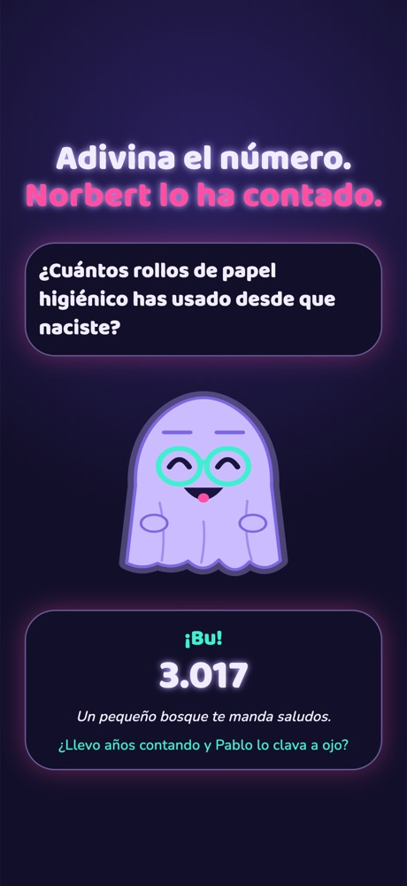
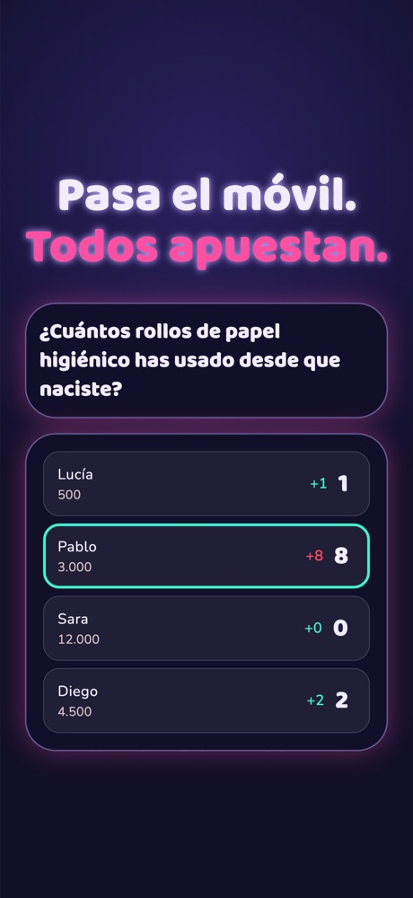
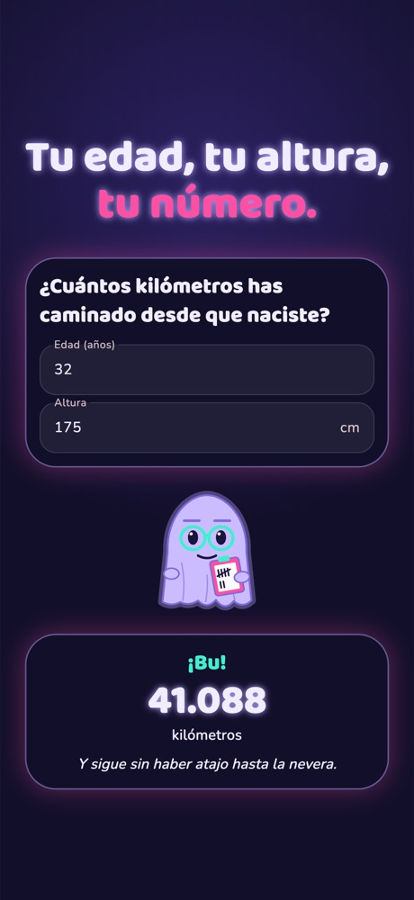
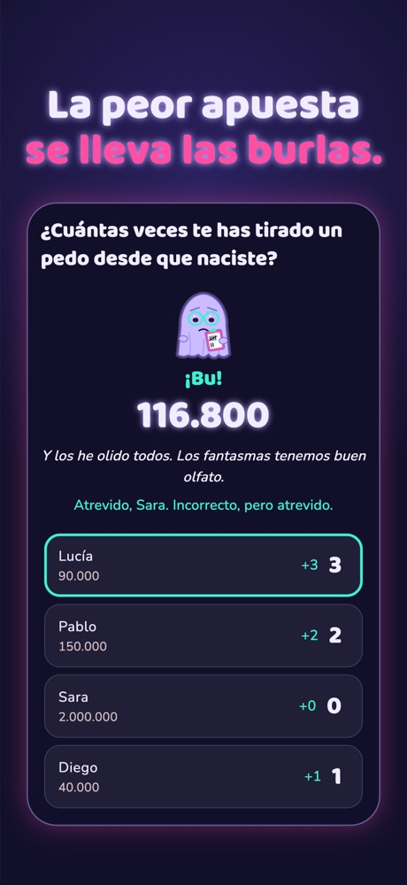
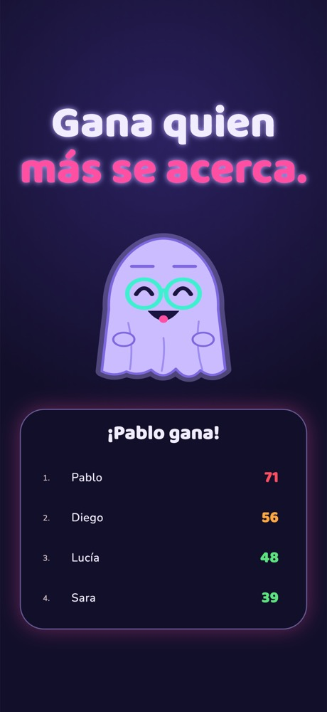
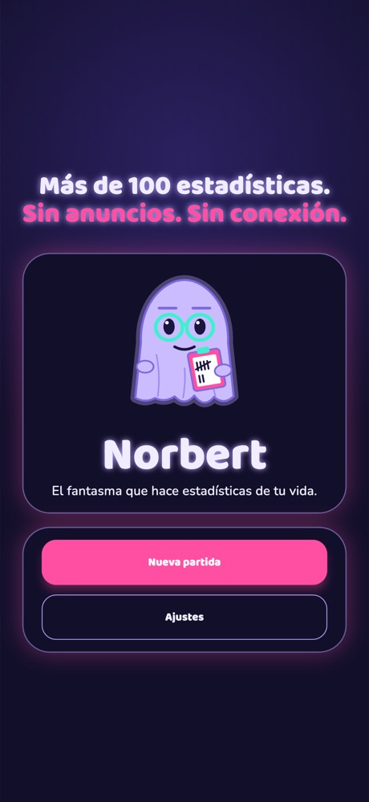

Norbert
El fantasma que hace estadísticas de tu vida.
Norbert es un fantasma empollón con gafas que te sigue desde que naciste, con su tablilla en la mano. Lo ha contado todo: los rollos de papel higiénico, los kilómetros andados, los litros de sudor.
Pasaos el móvil, da unos pocos datos sobre ti y apuesta por la cifra. Luego Norbert revela la verdad y se burla de quien más se alejó.
Las estadísticas están disponibles en español, inglés, francés, italiano, alemán y portugués.
Capturas






CÓMO JUGAR
1. Infórmale a Norbert
La estadística pide uno o dos datos, como tu edad o tu peso, para que el resultado hable de verdad de ti. ¿Demasiado personal? Pasa a otra.
2. Apostad
Cada jugador, por turnos, escribe su estimación de la cifra, sin mirar las de los demás.
3. ¡Bu!
Norbert aparece con la respuesta, una comparación para hacerse una idea y una pulla para el peor apostador.
Puntuación
Ganas 1 punto por cada jugador que se alejó más que tú. Acércate mucho y ganas un extra:
Tu partida, a tu manera
De 2 a 8 jugadores en un solo móvil, 5, 10 o 15 rondas. Una partida interrumpida se puede reanudar después.
101 estadísticas sobre ti
De toda tu vida a lo que tu cuerpo hace ahora mismo: pelo crecido, parpadeos, latidos, pizzas comidas… Cifras creíbles, preguntas tontas.
Sin anuncios, sin rastreo
Norbert es gratis. Sin cuenta, sin anuncios, sin compras integradas, sin rastreo. La app funciona totalmente sin conexión: lo que le cuentas a Norbert se queda en tu móvil.
Si te gusta lo que hago y quieres ayudarme a seguir, un café ayuda mucho.
Invítame a un caféCréditos
- Diseño y código
- Jeff · Two Pins Studio
- Hecho con
- Flutter